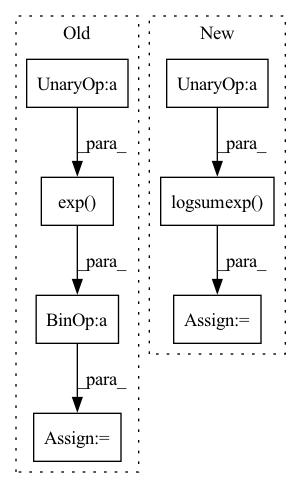

Pattern ID :11711

Before Change
def log_prob(self, z):
prob = 0.
for i in range(self.n_modes):
prob += torch.exp(-((z[:, 0] - 2 * np.sin(2 * np.pi / self.n_modes * i)) ** 2
+ (z[:, 1] - 2 * np.cos(2 * np.pi / self.n_modes * i)) ** 2)
/ (2 * self.scale ** 2)) / (2 * np.pi * self.scale ** 2 * self.n_modes)
return torch.log(prob + 1e-10)
def sample(self, num_samples=1):
After Change
+ (z[:, 1] - 2 * np.cos(2 * np.pi / self.n_modes * i)) ** 2)\
/ (2 * self.scale ** 2)
d = torch.cat((d, d_), 1)
log_p = - torch.log(2 * np.pi * self.scale ** 2 * self.n_modes) \
- torch.logsumexp(-d, 1)
return log_p
def sample(self, num_samples=1):
eps = torch.randn((num_samples, 2), dtype=self.scale.dtype, device=self.scale.device)
In pattern: SUPERPATTERN
Frequency: 3
Non-data size: 7
Instances
Fragment ID: 39532411
Project Name: vincentstimper/normalizing-flows
Commit Name: d9e324c6f8307204350588cc5387c7cff82c8274
Time: 2020-09-22
Author: vincent.stimper@gmail.com
File Name: normflow/distributions.py
M Class Name: CircularGaussianMixture
N Class Name: CircularGaussianMixture
M Method Name: log_prob(2)
N Method Name: log_prob(2)
M Parent Class: nn.Module
N Parent Class: nn.Module
M File Name: normflow/distributions.py
N File Name: normflow/distributions.py
M Start Line: 905
M End Line: 910
N Start Line: 905
N End Line: 913
'>
Before Change
// Numerical stability mixture and loglik
log_max = torch.amax(log, dim=2, keepdim=True) // [1,1,K] (collapsed joints)
lik = weights * torch.exp(log - log_max) // Take max
loglik = torch.log(torch.sum(lik, dim=2, keepdim=True)) + log_max // Return max
loglik = loglik * mask // replace with mask
After Change
log_pi = torch.sum(log_pi, dim=1, keepdim=True)
// Numerically Stable Mixture loglikelihood
loglik = torch.logsumexp((torch.log(weights) + log_pi), dim=2, keepdim=True)
loglik = loglik * mask
mean = torch.sum(weights * lambdas, axis=-1, keepdims=True)
reglrz = torch.mean(torch.square(y - mean) * mask)
'>
Fragment ID: 39532408
Project Name: nixtla/neuralforecast
Commit Name: e0011be5ea3be6d2eb3291c8c12b4f130e244002
Time: 2023-03-30
Author: kin.gtz.olivares@gmail.com
File Name: neuralforecast/losses/pytorch.py
M Class Name: PMM
N Class Name: PMM
M Method Name: neglog_likelihood(4)
N Method Name: neglog_likelihood(4)
M Parent Class: torch.nn.Module
N Parent Class: torch.nn.Module
M File Name: neuralforecast/losses/pytorch.py
N File Name: neuralforecast/losses/pytorch.py
M Start Line: 1404
M End Line: 1422
N Start Line: 1413
N End Line: 1438
'>
Before Change
// Numerical stability mixture and loglik
log_max = torch.amax(log, dim=2, keepdim=True) // [1,1,K] (collapsed joints)
lik = weights * torch.exp(log - log_max) // Take max
loglik = torch.log(torch.sum(lik, dim=2, keepdim=True)) + log_max // Return max
loglik = loglik * mask // replace with mask
After Change
log_pi = torch.sum(log_pi, dim=1, keepdim=True)
// Numerically Stable Mixture loglikelihood
loglik = torch.logsumexp((torch.log(weights) + log_pi), dim=2, keepdim=True)
loglik = loglik * mask
loss = -torch.mean(loglik)
return loss
'>
Fragment ID: 39532412
Project Name: nixtla/neuralforecast
Commit Name: e0011be5ea3be6d2eb3291c8c12b4f130e244002
Time: 2023-03-30
Author: kin.gtz.olivares@gmail.com
File Name: neuralforecast/losses/pytorch.py
M Class Name: GMM
N Class Name: GMM
M Method Name: neglog_likelihood(4)
N Method Name: neglog_likelihood(4)
M Parent Class: torch.nn.Module
N Parent Class: torch.nn.Module
M File Name: neuralforecast/losses/pytorch.py
N File Name: neuralforecast/losses/pytorch.py
M Start Line: 1596
M End Line: 1616
N Start Line: 1618
N End Line: 1638